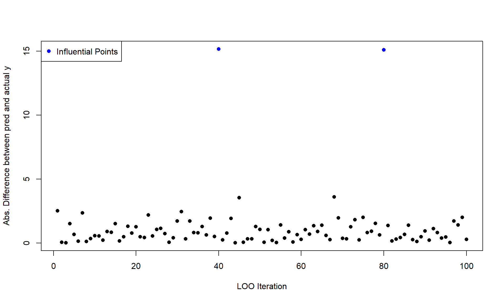
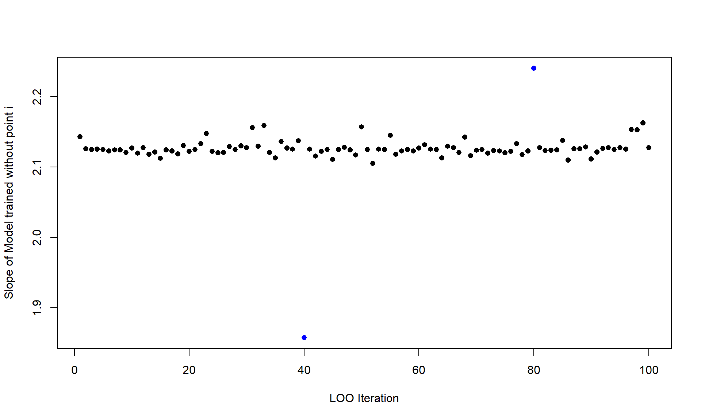

Pareto Smoothed Importance Sampling - Leave One Out Cross Validation from Scratch
Bayes
R
Stan
I didn’t believe the magic until I derived it for myself.
Published
November 27, 2024
Loo Who?
If you’re like me, when you first saw the loo package and all the accompanying research, you probably thought it was something close to magic. Coming from a traditional ML world, leave-one-out (loo) cross-validation (cv) is the gold standard for model checking and validation, but it is usually quite time consuming to do in practice.
To perform clascical loo, you loop over your data set \(n\) times, where \(n\) is the number points in your data. For each iteration you remove or “hold out” \((X_i, y_i)\), where \(X\) and \(y\) are the covariates and response, respectively. The remaining data \((X_{-i}, y_{-i})\) is used to train the model. After training you predict using the held out covariate \(X_i\) to produce \(\tilde{y}_i\). Comparison can then be made between \(\tilde{y}_i\) and \(y_i\) using whichever error function fits your domain: MSE, accuracy, ELPD, etc.
Here is a short demo for linear regression with one covariate. We’ll perform loo and plot the absolute difference between \(\tilde{y}_i\) and \(y_i\):
Code
set.seed(1235)n <-100x <-rnorm(n)y <- x*2+-2+ifelse(1:100%%40==0, 15, rnorm(n,0,1))data <-cbind(co=x,resp=y) |>as.data.frame()loo_pred <-rep(NA, n)slope_pred <-rep(NA, n)for (i in1:n){ mod <-lm(resp ~ co, data=data[-i,]) loo_pred[i] <-predict(mod, newdata=data[i,]) slope_pred[i] <- mod$coefficients[2]}diff <-abs(loo_pred - data$resp)plot(diff, ylab='Abs. Difference between pred and actual y', xlab='LOO Iteration', pch=16, col=ifelse(diff >4, 'blue','black'))legend('topleft', col=c('blue'), pch=c(16), legend=c('Influential Points'))

An immediate result of this testing framework is that each point can be compared independent of the other. They are not batched into testing/training sets, each point is a predicted value where the model never got to see it during training. We can already start to see which points might be causing issues for the model or does not fit our data generating process. Another benefit that I’ll briefly show is how the coefficients of the \(n\) trained models differ. Thus showing how influential some points in the data might be.
Code
plot(slope_pred, pch=16, ylab='Slope of Model trained without point i', xlab='LOO Iteration',col=ifelse(diff >4, 'blue','black'))

Some Important Samples
Alright, so we’ve tackled the latter half of the posts name. What about the first half? Well for that, we’ll have to split it in half as well and focus on importance sampling first. At its heart, importance sampling is just a way to evaluate pesky integrals. Consider the following expectation.
For vanilla importance sampling we could draw \(S\) samples of \(\theta\) from \(\pi(\theta)\) and then take the average over all samples of the quantity \(\pi(\theta) \cdot f(\theta)\) to get an approximation of the above expectation. That is,
Now, let’s assume that we cannot draw samples directly from \(\pi(\theta)\), as is usually the case when attempting to draw samples from a complex posterior distribution. Instead, we can draw samples from \(\gamma(\theta)\), which nicely approximates \(\pi(\theta)\). We can then transform our integral to the following:
We call the quantity \(\frac{\pi(\theta)}{\gamma(\theta)}\) the importance ratio. The slight catch here is that above will only hold if both \(\pi\) and \(\gamma\) are normalized. If they are not, which is usually the case if we are approximating posteriors, then we need to employ the self-normalized estimator. That is, if \(r(\theta)= \pi(\theta)/\gamma(\theta)\) is an non-normalized importance ratio, then
is the self-normalized importance estimator of \(E_\gamma[r(\theta) f(\theta)]\).
Let’s show a quick example where \(\pi \sim N(0,1)\) and \(f(\theta) = \theta^4\). Clearly, \(\pi\) would be a dream to sample from, but we’ll assume that we left our normal sampler at home. We’ll instead use \(\gamma \sim t_{\nu=1,000}\) to sample from as an approximation to \(\pi\).
From the properties of the normal distribution, we know that we are just estimating \(E[\theta^4]\) with respect to the normal distribution. The answer of course is just given by the 4th central moment: \(3\sigma^2\).
So we have our estimator, but there are still questions that we’ve swept under the rug. For one, how many iterations should we have run our sampler for, and does \(\gamma\) really approximate \(\pi\) well enough. For a little motivation let’s try the same experiment again, but instead use \(\gamma \sim t_{\nu=10}\) which has wider tails (a little foreshadowing).
Wow! Look’s like we are far from our actual value. But there are no warnings, nothing yelled at us for the poorly estimated value. How can we critique the sampler as well as our chosen \(\gamma\) distribution?